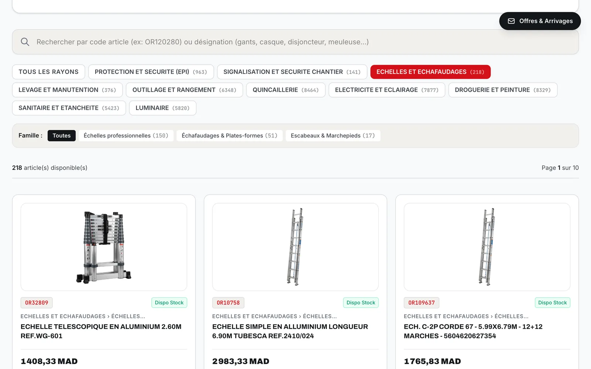
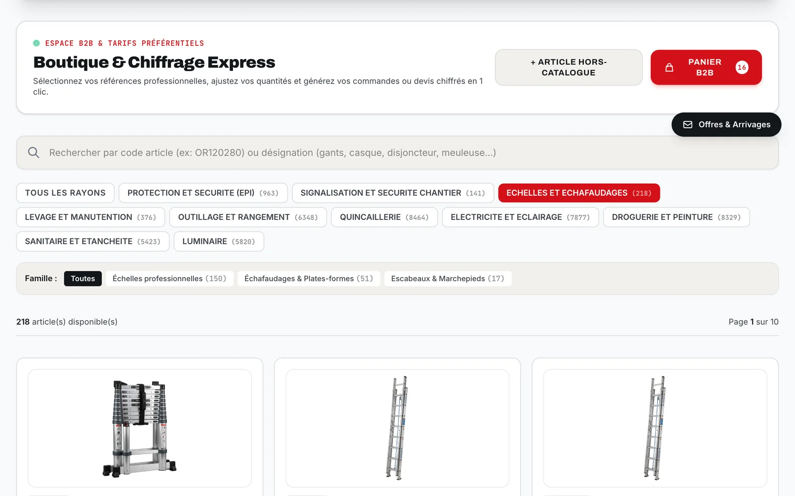
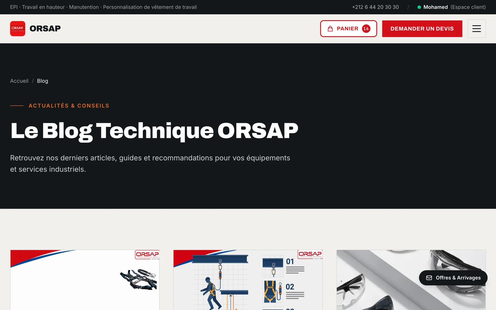
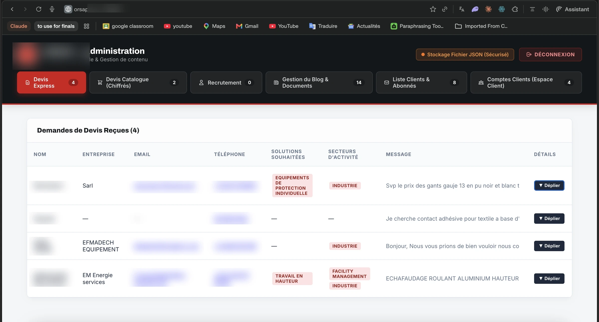
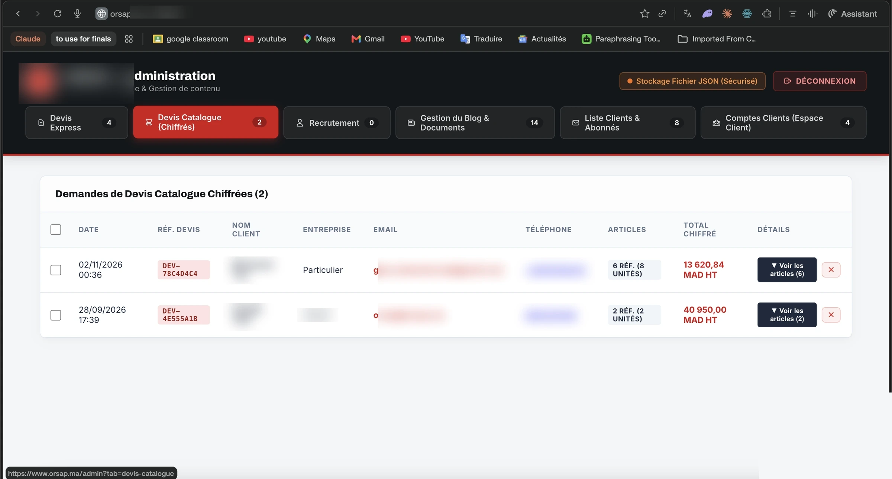
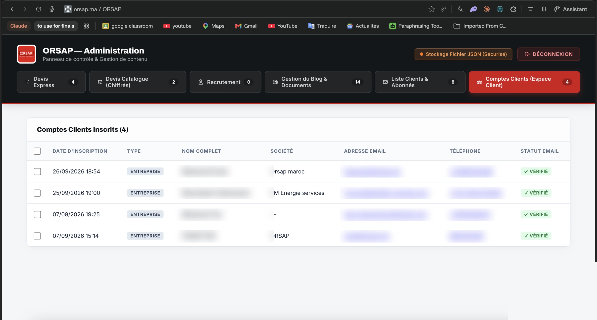
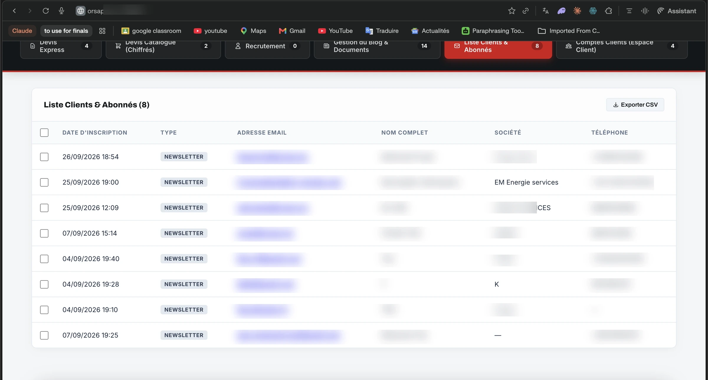
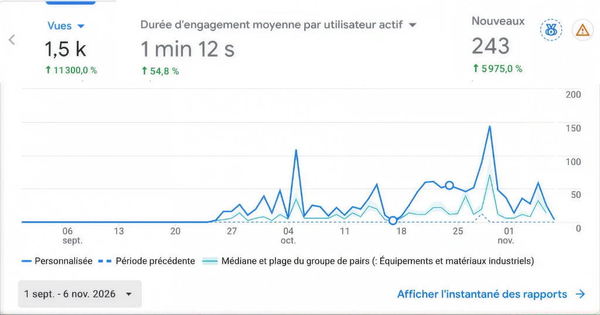

ORSAP · B2B Industrial Commerce & Connected Platform · Casablanca
A connected B2B platform with over 700,000 MAD in reported lead value.
MotaGrowth redesigned and developed ORSAP’s digital presence around a commercial objective: help industrial buyers discover the company’s offer, explore products, and take the next step toward a quotation or purchase.
The project combines a customer-facing storefront with catalog-based quotation workflows, customer accounts, content-management access, and an administration interface for reviewing incoming requests. According to reported results, the website generated over 700,000 MAD in potential business opportunities without paid advertising. This figure represents project-owner-reported lead value, not confirmed revenue.
01 / Positioning & Action
A storefront that explains the offer and directs visitors toward action
The homepage introduces ORSAP’s industrial positioning and presents its core solutions, including personal protective equipment, work-at-height solutions, handling, and customization. Its opening calls to action give visitors two clear routes: request a quotation or explore the catalog.
This gives the redesign a specific purpose: help visitors understand what ORSAP supplies and choose a relevant next step.
Storefront value proposition, solutions taxonomy & dual CTAs
Industrial positioning paired with instant actions: explore the technical catalogue or submit an urgent project quote.
 ↗ Click to enlarge
↗ Click to enlarge
02 / Commerce Architecture
A B2B catalog and e-commerce experience built around quotations
The project includes a product-selection and priced-quotation workflow. The administration records show product references, quantities, customer details, and calculated quotation totals.
This is more substantial than displaying products on static pages: it connects product interest with a structured commercial request.
Demonstrated functionality: “A B2B catalog and quotation experience that captures selected products, quantities, and calculated totals.”
Reference search & quotation calculations
Allows buyers to look up exact SKUs and add items to a priced quotation.

↗ Click to enlargeBoutique & Chiffrage Express
Client-facing quotation generator for off-catalogue items, quantities, and direct B2B cart submissions.

↗ Click to enlarge03 / Conversion Pathways
Calls to action connected to different buying needs
The website provides routes for visitors who want to browse, request a quotation, or contact an expert. Its quotation page explicitly accommodates needs ranging from a single product to a complete solution, while the contact page offers telephone, email, WhatsApp, and a technical inquiry form.
The important point is not simply that the website has buttons. It offers different next steps depending on the buyer’s readiness:
- Explore the offer: For first-time visitors evaluating ORSAP’s capacity and product range.
- Submit a defined product requirement: For procurement officers who already know exact SKUs and quantities.
- Explain a broader project: For contractors bidding on tenders needing full workforce outfitting.
- Ask for technical guidance: Direct access to safety and engineering specialists.
These function as deliberate conversion pathways—designed to serve varying levels of buyer readiness rather than assuming every visitor is ready for the same action.
04 / Publishing & Authority
A blog and content layer alongside the commercial experience
The platform includes a blog and document-management section, extending the website beyond product presentation into content publishing.
In the case study, the blog’s intended role is explained as: providing useful industrial information alongside the product and quotation experience. It allows ORSAP to publish technical safety articles, equipment standards (e.g., EN certifications), and regulatory guidelines, creating relevant contextual links to products, services, and inquiry actions.
Technical safety guidelines & standards
Publishing regulatory insights and safety equipment advice for construction and plant managers.

↗ Click to enlarge05 / Workflow Specialization
Two quotation workflows—not one generic contact form
ORSAP’s administration distinguishes between:
- General quotation requests: Containing customer requirements, requested solutions, sectors, and messages.
- Catalog quotations: Containing selected product references, quantities, and calculated values.
This is a meaningful part of the implementation. It accommodates both customers who know the products they need and customers who need help defining a solution.
General quotation requests (Devis Express)
Capturing customer project requirements, solution categories, activity sectors, and detailed briefs.

↗ Click to enlargePriced catalog quotations (Devis Chiffrés)
Capturing selected product references, item quantities, and automatically calculated quotation totals.

↗ Click to enlarge06 / Client Operations
Customer accounts and contact management
The customer-account view displays registration information, account type, company details, and email-verification status. A separate directory organizes contact/subscriber records and includes an export control.
These demonstrate account and contact-management functionality integrated directly into the platform.
Data integrity note: The visible record totals demonstrate account and contact-management functionality; they are not presented as newly acquired commercial customers because they include internal or ORSAP-associated entries.
Registration, company info & verification
Auditing customer accounts, verification badges, and organization details.

↗ Click to enlargeCentralized records with export control
Organizing inbound contacts and newsletter subscribers with single-click CSV export.

↗ Click to enlarge07 / Verification
Results and Evidence
Reported commercial outcome
Over 700,000 MAD in potential lead value generated without paid advertising.
Project-owner-reported result. Publish alongside a defined reporting period and redacted evidence of genuine external opportunities. Exclude test records and duplicates.
Recorded website activity (September 1–November 6, 2026)
For September 1–November 6, 2026, the supplied Analytics screenshot reports:
| Metric | Recorded Result |
|---|---|
| Views | Approximately 1.5k |
| New users | 243 |
| Average engagement per active user | 1 minute 12 seconds |
Analytics dashboard (September 1–November 6, 2026)
Recorded traffic telemetry validating 1.5k views, 243 new users, and 1m 12s active engagement.

↗ Click to enlargeThese figures document website activity. They do not independently establish the lead-value total, closed sales, or the acquisition source.
08 / The Distinction
What distinguishes the implementation
The strongest differentiator is the connection between its parts:
The blog and content layer extend the publishing scope, while customer accounts and administration extend the operational scope. Together, these make the project more than a collection of designed pages.
Compared with a brochure-only website, this is the distinction to emphasize. Claims of superiority over specific competitors require a separate comparison.
Planning a B2B commerce project?
Whether you need to connect product presentation with structured quotation workflows, build dedicated client spaces, or engineer a scalable B2B engine, let's discuss your requirements.
Discuss your project ↗